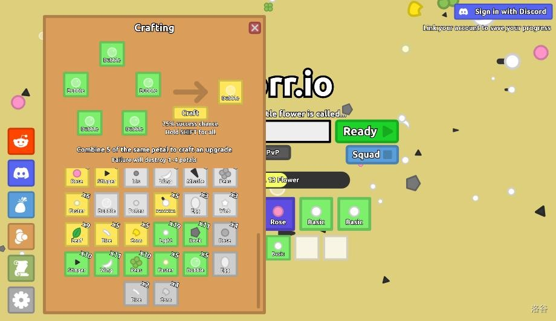
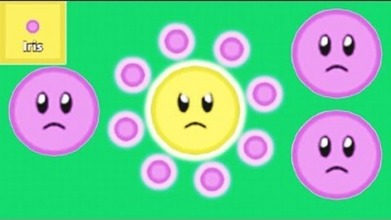
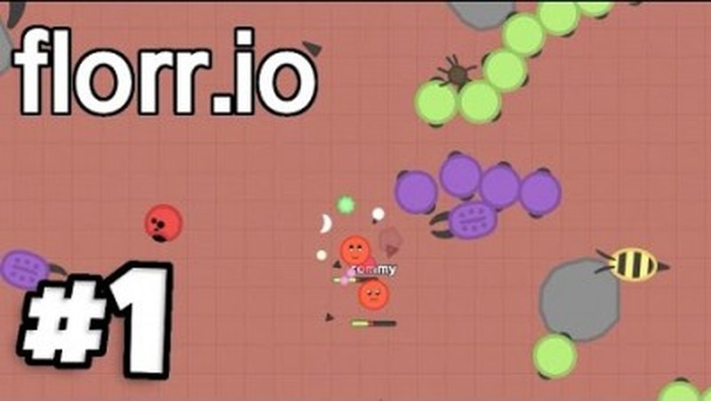

Introduction
Florr.io is a unique multiplayer .io game from the creator of Diep.io where you play as a flower with orbiting petals that serve as both weapons and shields. Set in a vibrant, colorful world divided into distinct biomes, Florr.io combines elements of farming, crafting, PvP combat, and exploration into one deeply addictive experience. Your goal is to collect petals, defeat mobs, craft stronger loadouts, and become the most powerful flower on the server. With its 7 rarity tiers, dozens of petal types, and complex build system, Florr.io offers incredible depth that keeps players coming back for hundreds of hours.
Getting Started

When you first spawn into Florr.io, you begin in the Centralia Fields with 5 Basic (Common) petals orbiting your flower. Your flower follows your mouse cursor by default, though you can switch to keyboard controls (WASD/Arrow keys) in the Settings. Here are the essential first steps:
1. Movement & Controls: Move your mouse to navigate. Press Left Click / Space for offensive position (petals extend outward). Press Right Click / Shift for defensive position (petals pull closer to your flower). Use Q/E to adjust petal rotation speed.
2. Farm Mobs: Start by defeating weak mobs in the Centralia Fields. Each mob drops XP and has a chance to drop petals. Absorbing XP petals levels you up, while petal drops go into your inventory.
3. Upgrade Petals: Open crafting with C key. Combine 5 petals of the same type and rarity to craft 1 petal of the next rarity tier. Success rates decrease at higher rarities — failed crafts destroy 1-4 petals.
4. Level Up Talents: Each level up gives you 1 Talent Point. Open the talent tree with X and invest in stats like health, body damage, attack reach, reload speed, and crafting bonuses.
Biomes Guide
Florr.io's map is divided into several interconnected biomes, each with unique mobs, petal drops, and difficulty levels. Progressing through biomes is the core gameplay loop:
🌿 Centralia Fields (Starting Area): The safest zone with weak mobs. Drop Common and Uncommon petals. Perfect for early-game farming and learning combat basics. Mobs here include basic creatures that pose minimal threat.
🏜️ Desert: As you move right from spawn, you enter the Desert biome with stronger mobs. Mobs here drop Rare and Epic petals. The terrain is open with fewer obstacles, making it good for hit-and-run tactics but dangerous if surrounded.
🌊 Ocean: The ocean biome features aquatic mobs with unique petal drops. Navigation is different here — some pets perform differently in water. The ocean connects to the deep Trench area, which is extremely dangerous but drops Legendary+ petals.
🔥 Sand/Poison Zones: High-level areas with powerful mobs that drop Mythic petals. These zones require well-crafted loadouts to survive. The Poison biome adds environmental damage, so healing petals become essential.
⚔️ PvP Arena: A dedicated combat zone where players fight each other. No mobs here — pure PvP action. The best place to test your build against other flowers and practice advanced combat techniques.
The Petal System

Petals are the heart of Florr.io. They orbit your flower and act as both your offense and defense. Understanding the petal system is crucial to success:
Rarity Tiers (7 levels): Common → Uncommon → Rare → Epic → Legendary → Mythic → Super. Each upgrade makes petals significantly more powerful but harder to craft.
Key Petal Types:
• Rose: High damage melee petal. The bread and butter of most builds. Stack multiple Roses for devastating close-range damage.
• Light: Increases your flower's speed. Essential for mobility builds. More Light petals = faster movement.
• Bubble: Ranged projectile petal. Good for kiting enemies and dealing damage from a distance. Popular in "Pea Shooter" builds.
• Disc: Boomerang-style petal that returns after being thrown. Excellent for area control and hitting multiple targets.
• Leaf: Defensive petal with healing properties. Leaf-heavy builds (called "Leaf Wheel") are great for grinding mobs sustainably.
• Missile: Homing projectile that locks onto enemies. Expensive to craft but devastating in combat.
• Sponge: Absorbs incoming damage. Critical for tank builds that need to survive focused fire.
• Iris: Poison damage over time petal. "Full Iris" builds are popular for their sustained DPS against tough mobs and bosses.
• Uranium: Extreme damage but also damages your own flower. High risk, high reward — only for experienced players.
Loadout System: You have 10 petal slots and can save/load builds. Use R to swap between primary and secondary loadouts. Save different builds for farming (defense-focused) vs. PvP (damage-focused). Press O to save current build, L + number to load.
Crafting Strategy

Crafting is where Florr.io's depth really shines. Here are the key strategies:
1. The 5-to-1 Rule: Always craft in batches. 5 Common → 1 Uncommon, 5 Uncommon → 1 Rare, etc. The success rate drops at higher tiers, so save up large quantities before attempting Mythic or Super crafts.
2. Farm Efficiently: Focus on biomes that drop the petal types you need. Don't waste time in low-level biomes once you've outgrown them — the XP and drop rates won't justify the time.
3. Build Around Synergy: The best builds combine complementary petals. For example: Rose (damage) + Light (speed) + Sponge (defense) creates a balanced "Rice Ram" build. Leaf + Bubble creates a "Pea Shooter" for safe ranged farming.
4. Don't Over-Craft: Sometimes it's better to run a build with mixed rarities than to spend hours trying to craft all-Super petals. A well-balanced Rare/Epic build can outperform a poorly built Super build.
5. Save Resources: Always keep backup petals in your inventory. If you die, you keep your inventory but lose your equipped petals temporarily. Having backups lets you quickly re-equip without farming from scratch.
Combat Tactics
Combat in Florr.io is all about positioning and timing. Your petals rotate around your flower, so the angle of engagement matters enormously:
Offensive Position: Press Space/Left Click to extend your petals outward. This maximizes your damage output but exposes your flower's center. Use this when you have the advantage or need burst damage.
Defensive Position: Press Shift/Right Click to pull petals closer. This reduces damage output but protects your flower. Use when retreating, when low on health, or when facing multiple enemies.
Simultaneous Mode: You can press both attack and defense simultaneously — this triggers petals that work in both modes and defaults to defensive stance. Advanced players use this to maintain pressure while staying protected.
Kiting Mobs: For farming, keep mobs at the edge of your petal range. Move in a circle so your rotating petals continuously hit them while they struggle to reach your flower center. This is the safest way to farm tough mobs.
PvP Positioning: In player fights, try to approach from angles where your strongest petals face the opponent. If you have a Rose-heavy build, close the distance. If you have Bubble/Missile, maintain range. Always be aware of your retreat path.
Best Builds for Beginners & Pros
Here are proven builds for different playstyles and progression stages:
🌱 Beginner Farm Build (Common/Uncommon):
3 Basic + 2 Light petals. Simple but effective for early-game. The Basic petals provide decent damage while Light petals give you escape speed. Focus on farming in Centralia Fields until you can craft at least Rare petals.
🌿 Leaf Wheel (Rare/Epic):
6-8 Leaf petals + 2 Light. The Leaf Wheel is the classic sustainable farming build. Leaves provide constant damage and minor healing, letting you farm indefinitely without dying. Add Light for mobility to dodge tough mobs.
🔫 Pea Shooter (Rare/Epic):
Bubble/Peas as main damage + Light for speed + basic defensive petals. This build fights from maximum range, kiting enemies while dealing consistent projectile damage. Excellent for desert farming.
💀 Death Wheel (Epic/Legendary):
Heavy + Disc + Cutter + Light combination. The Death Wheel specializes in destroying mobs quickly through the garden biomes. It trades some defense for massive damage output. Not ideal against high-level PvP opponents.
🍚 Rice Ram (Mythic):
4 Rice + Bur + Cutter + Disc + Sponge + 2 Light. The endgame farming build used by experienced players to farm Super mobs. High burst damage with enough survivability to handle tough encounters. Use Bandage in secondary loadout for emergency healing.
☢️ Full Iris (Mythic/Super):
10 Iris petals. Maximum poison damage over time. Melts bosses and high-HP mobs. Extremely expensive to craft but unmatched sustained DPS. Vulnerable to fast-attacking builds that can close distance quickly.
Pro Tips
Take your time progressing through biomes. Rushing into high-level areas without proper petals wastes time because you'll die repeatedly. Instead, farm the current biome thoroughly until you have a solid Rare or Epic loadout.
Use the secondary loadout strategically. Keep a farming build as primary and a combat/PvP build as secondary. Swap with R key when you encounter other players or enter PvP zones.
Alliance with distant players for trade routes. If you and an ally both have ports, trade ships generate more gold the farther apart you are. This passive income is crucial for funding expensive crafts.
Watch your petal rotation speed (Q/E keys). Slower rotation means each petal stays on the attack side longer, maximizing damage per hit. Faster rotation spreads damage more evenly but hits less hard per contact.
Always use Compass when farming Super mobs. Spread out your Fangs for consistent healing coverage. Battery is the best damage source against Ultra Leech bosses, followed by Lightning petals.
Don't neglect Sharp Edges talent — it dramatically improves both Rice Ram and Heal Ram builds by adding contact damage that works even when your petals are on cooldown.
Save before risky crafts. If you're attempting Mythic or Super crafting, make sure you have enough backup petals to re-equip if the craft fails. A failed Mythic craft can destroy up to 4 petals, potentially setting you back hours of farming.
FAQ
Q: What is the best petal in Florr.io?
A: There's no single "best" petal — it depends on your build. Rose is the most versatile damage petal, Light is essential for mobility, and Iris dominates against high-HP targets. The best approach is building synergy between complementary petals.
Q: How do I get Super rarity petals?
A: Super petals drop from Ultra-level mobs in the most dangerous areas of the map. You'll need a Mythic-level build to survive these fights. Alternatively, you can craft 5 Mythic petals of the same type, but the success rate is very low.
Q: Is Florr.io still active in 2026?
A: Yes! Florr.io remains one of the most popular .io games with a dedicated player base and active development. The Fandom wiki is regularly updated with new content, and the game continues to receive balance updates and new features.
Q: Can I play Florr.io on mobile?
A: Florr.io is primarily designed for desktop browsers with mouse controls. While some mobile browsers can load the game, the mouse-based controls make desktop play strongly recommended for the best experience.
Q: How do I save my progress?
A: Click "Sign in with Discord" to link your account and save your progress. Without an account, your progress is stored locally and may be lost if you clear browser data.
Conclusion
Florr.io is one of the deepest and most rewarding .io games available today. Its unique petal system, complex crafting mechanics, and diverse biome exploration create a gameplay experience that rivals many full-fledged games. Whether you're casually farming in the Centralia Fields or engaging in intense PvP battles with a Mythic loadout, Florr.io always has something new to offer. The key to success is patience — take your time building up petals, experiment with different loadouts, and don't be afraid to lose a few crafts along the way. The satisfaction of finally crafting that Super rarity petal or defeating a Ultra mob makes every moment of grinding worthwhile. Start your floral adventure today and bloom into the strongest flower on the server!